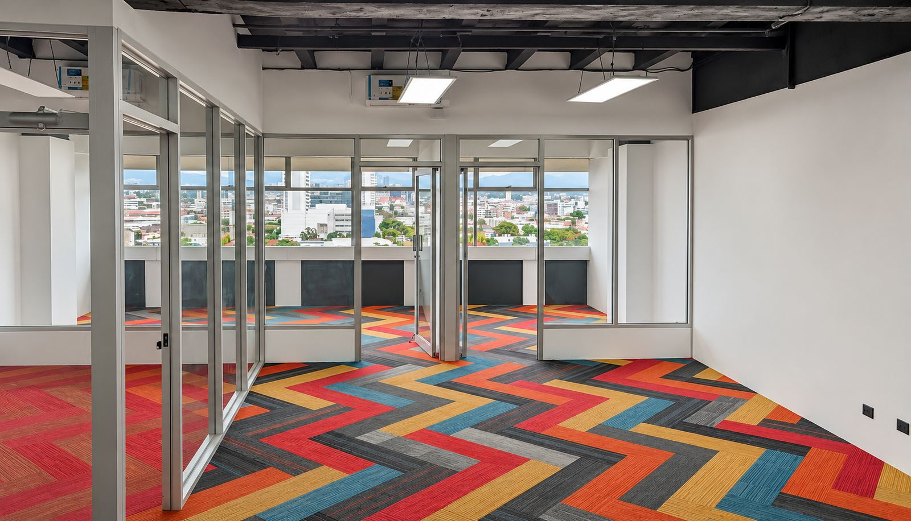
Área abierta con ventanales
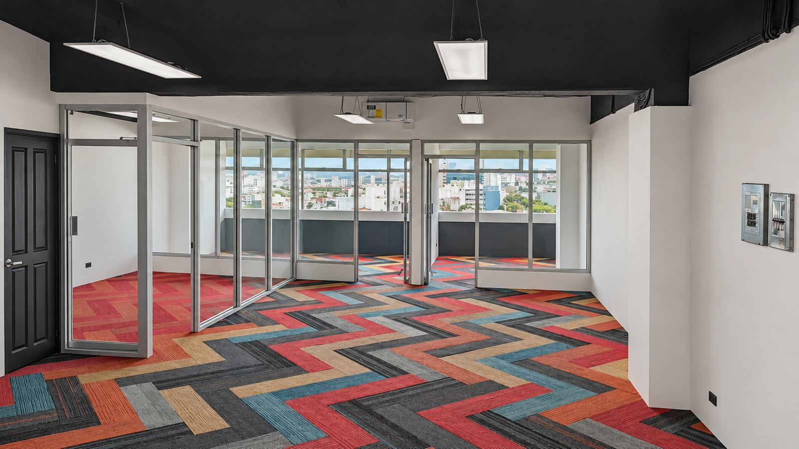
Paseo Colón, San José, Costa Rica · Espacios que impulsan grandes negocios
| Alquiler (USD 8,50 × 119 m²) | USD 1.011,50 |
| Cuota de mantenimiento (USD 3,30 × 119 m²) | USD 392,70 |
| Total mensual estimado | USD 1.404,20 |

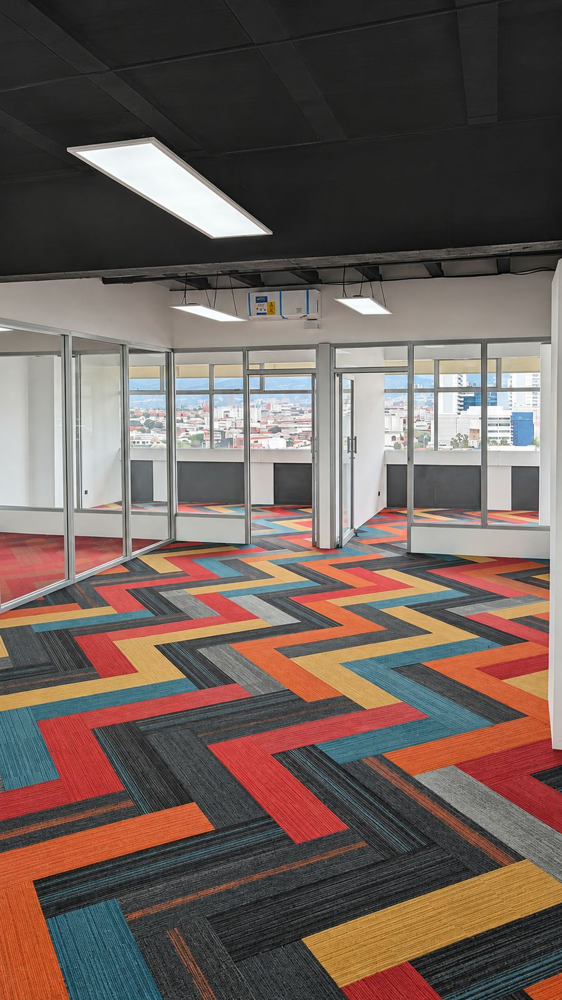
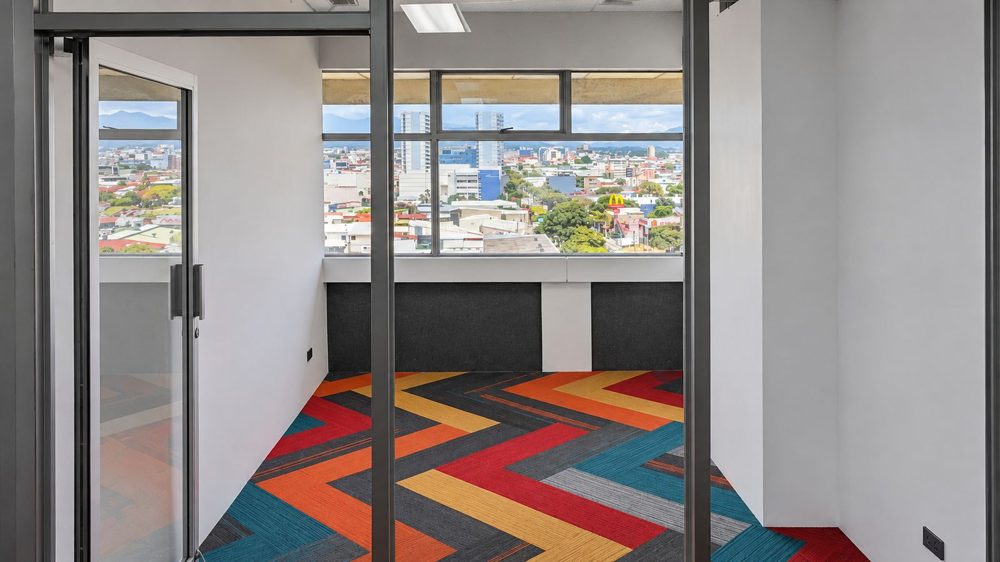
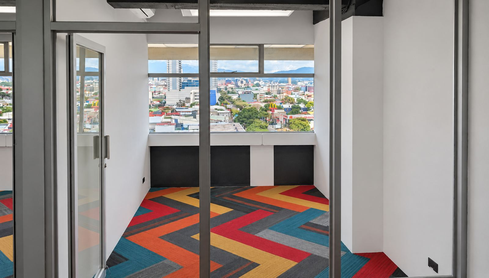
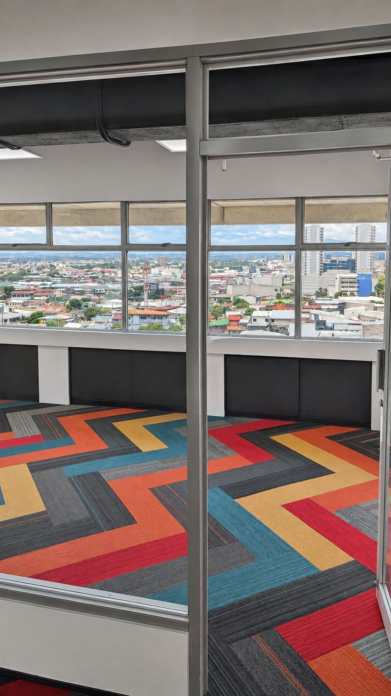
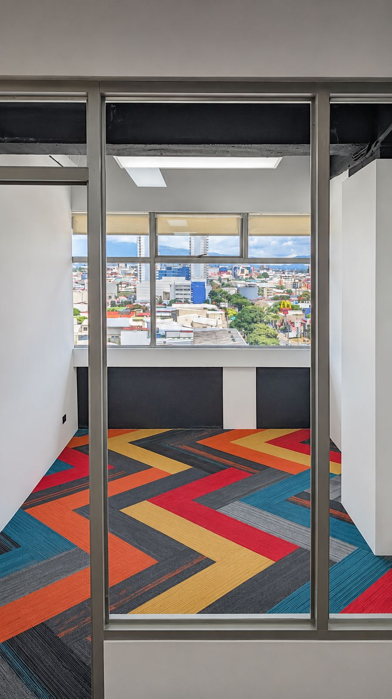
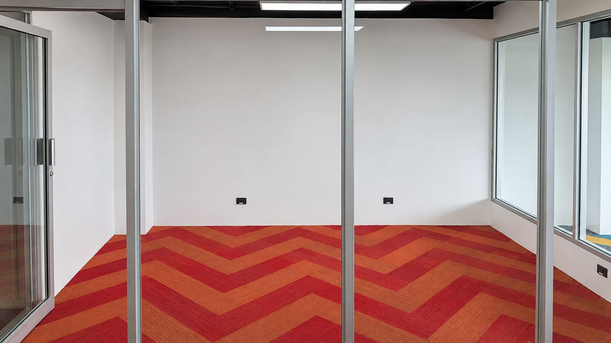
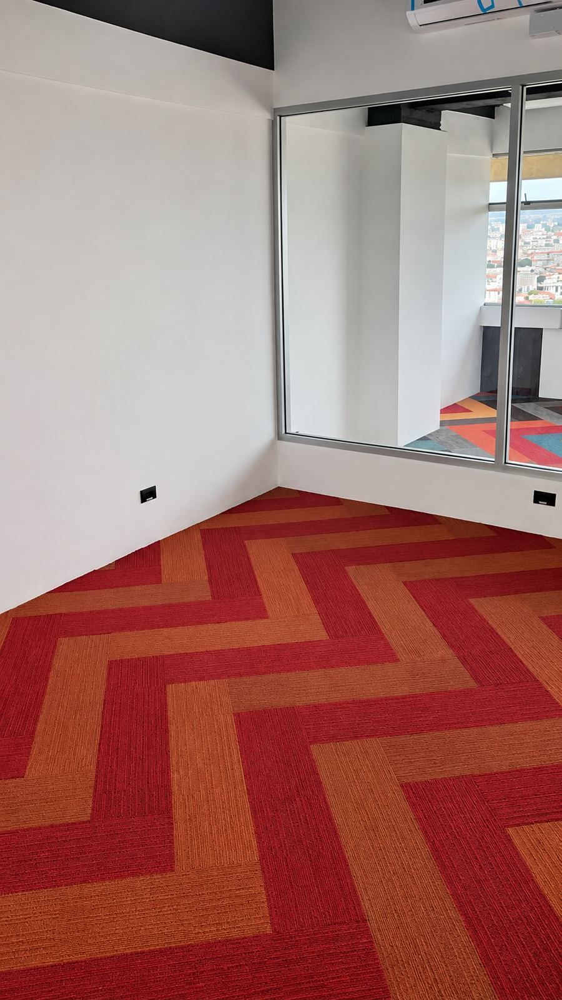
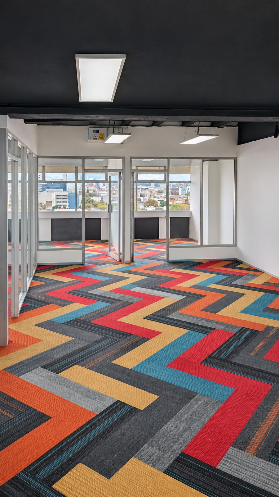
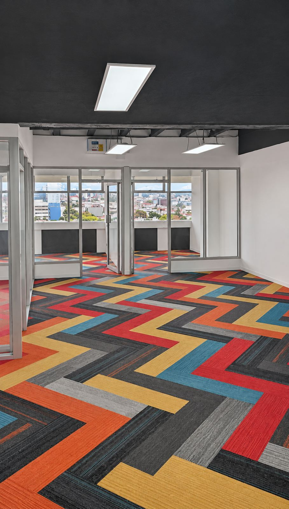
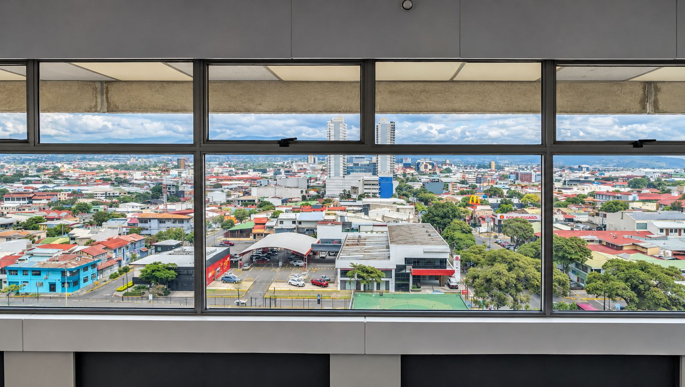
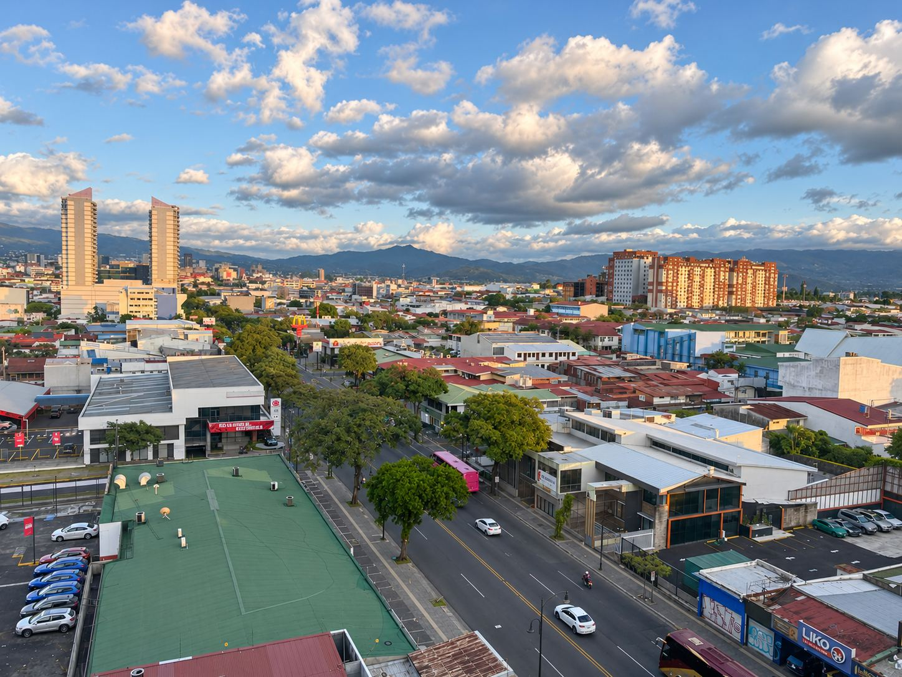
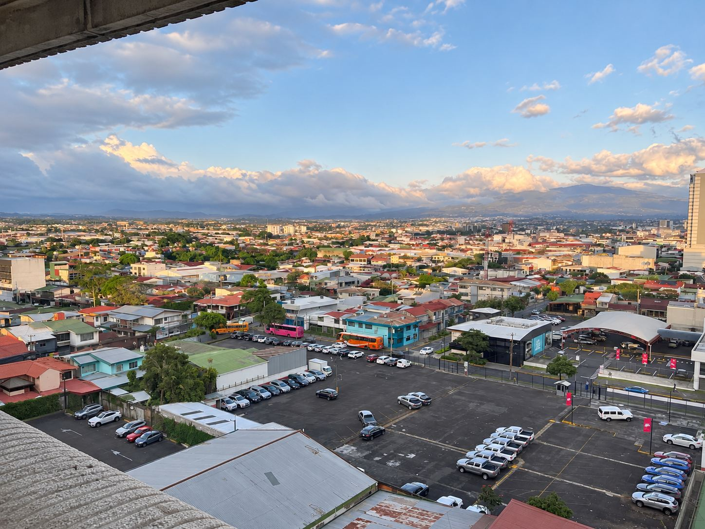